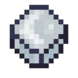

Крижана бомба
Крижані бомби — це предмети, які можна кидати і які випадають з Альфа Єті. Після кидка блок льоду летітиме за траєкторією, поки не приземлиться. Коли він приземлиться, з'явиться ділянка 5х5 із частинок снігу. Усі не крижані блоки в цьому радіусі покриються шаром снігу, вода перетвориться на лід, а лава — на обсидіан. Істоти в радіусі дії крижаної бомби отримуватимуть пошкодження, доки не покинуть цю зону або поки крижаний блок не зникне. На них також діятиме ефект Обмороження III протягом 5 секунд.
- Тип: предмет
- Міцність: -
- Відновлюваний: ні
- Складається: так (16)
- ID: twilightforest:ice_bomb

На Єті та Зимових вовків крижані бомби діють інакше. Будь-який Єті, що опиниться в радіусі дії крижаної бомби, перетвориться на стовп із крижаних блоків розміром 1х1х2. Це може бути дуже зручним способом боротьби з їхніми набридливими зграями. Зимові вовки, у свою чергу, невразливі до крижаних бомб.